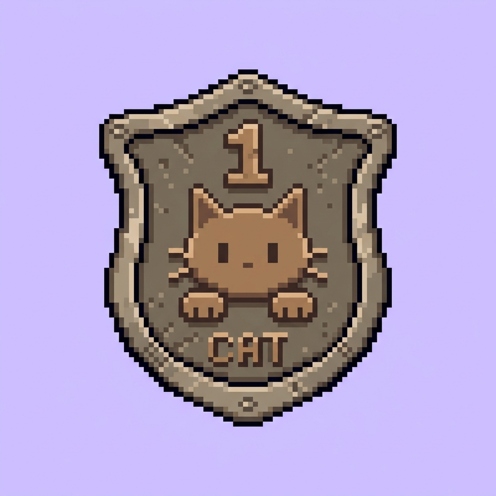
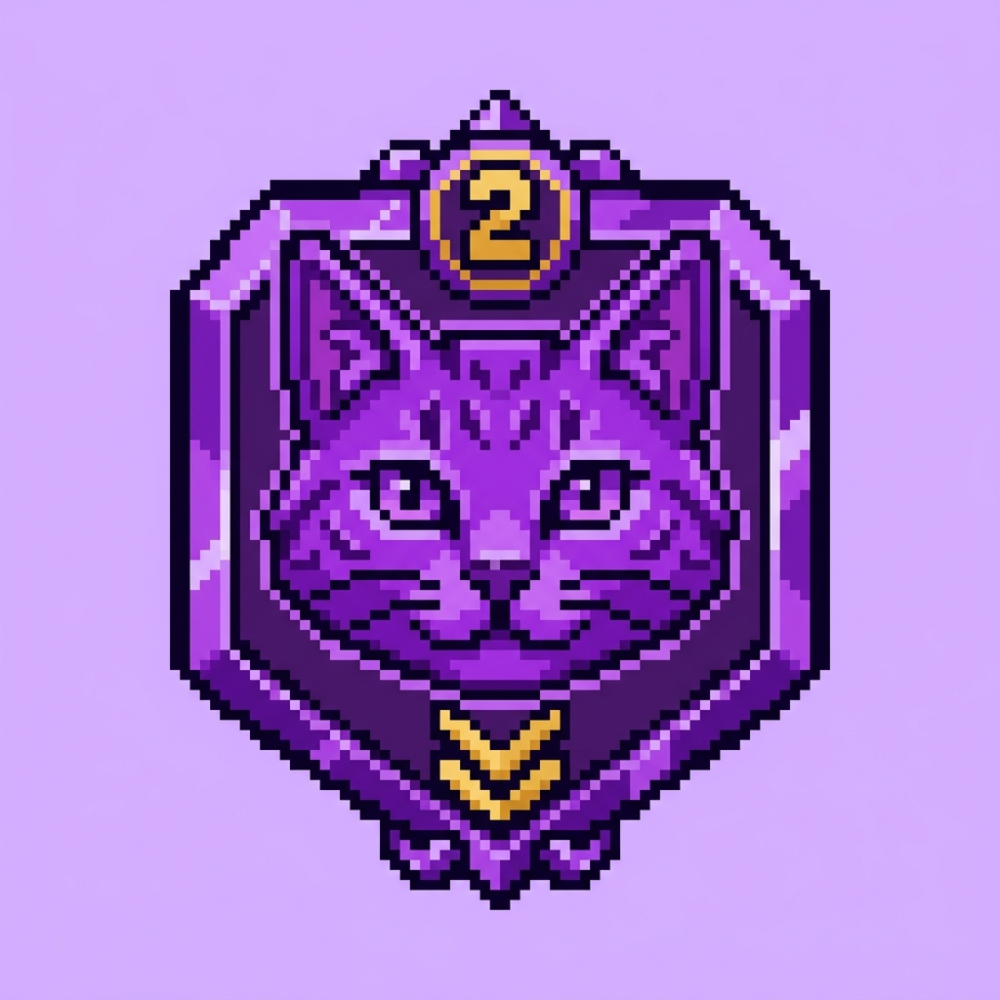
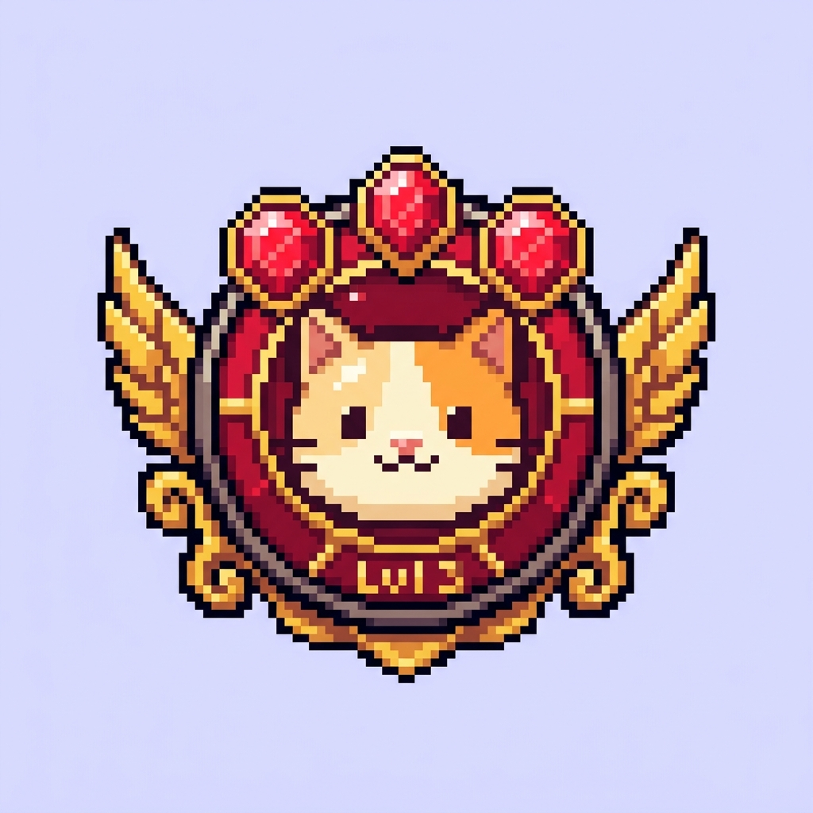
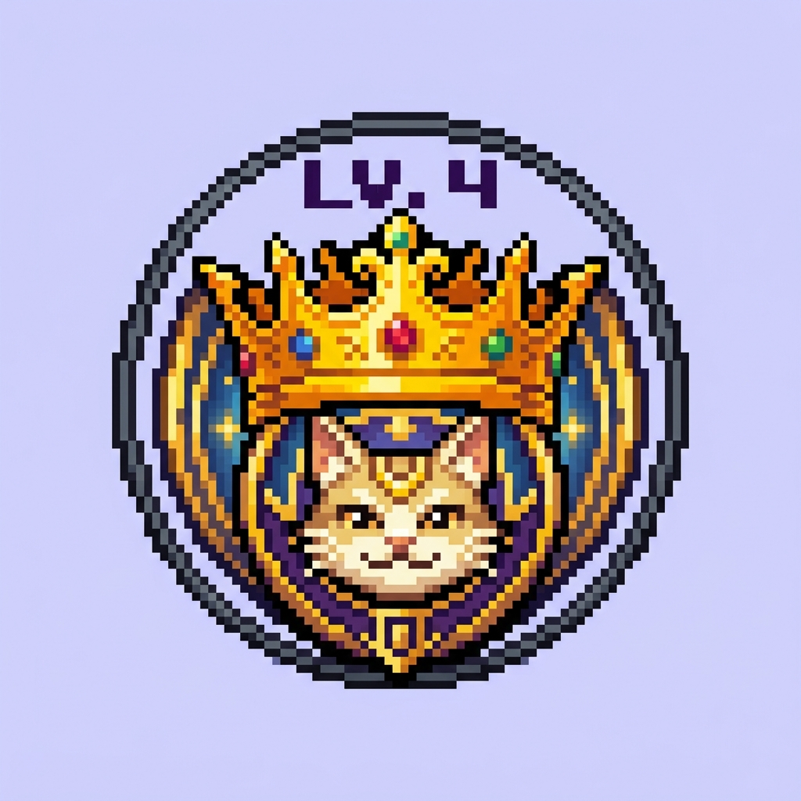
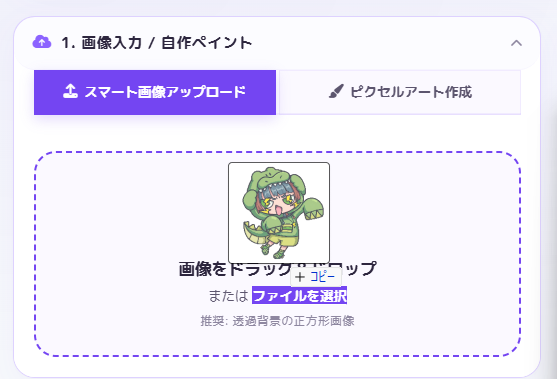
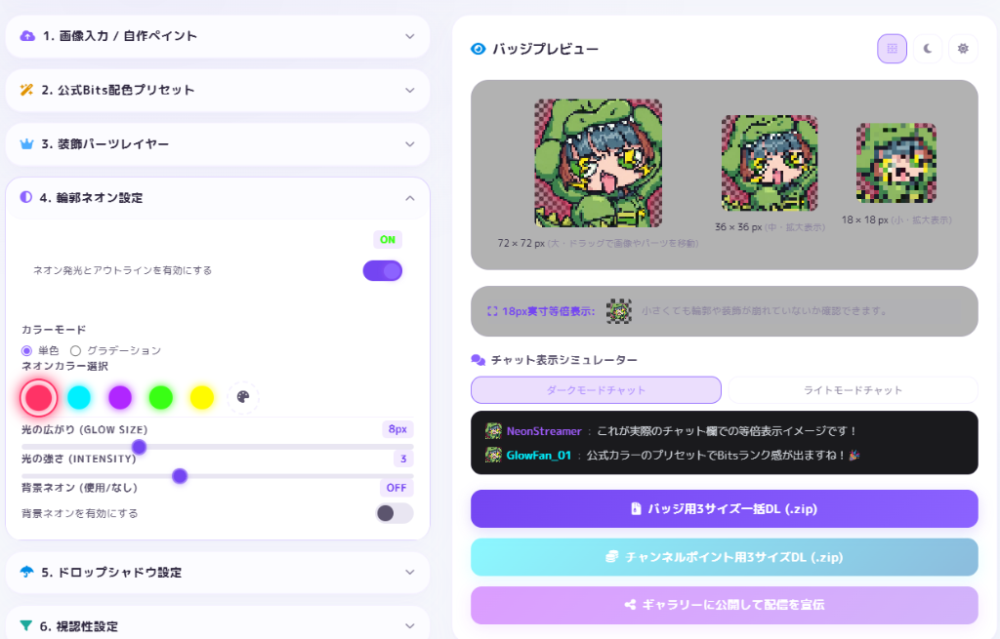
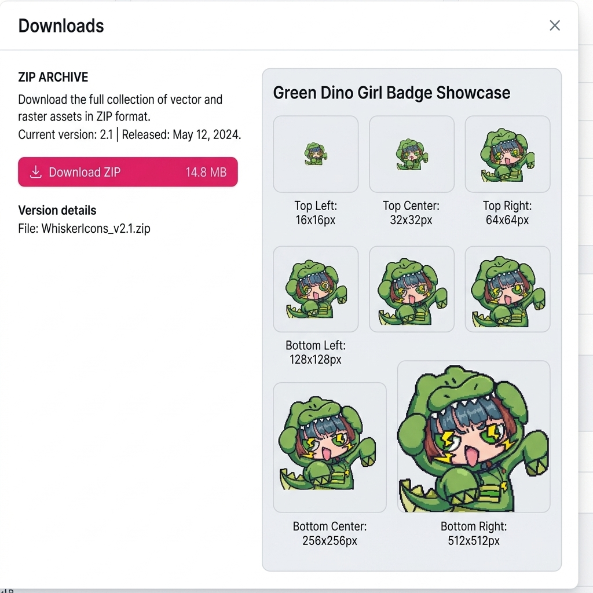
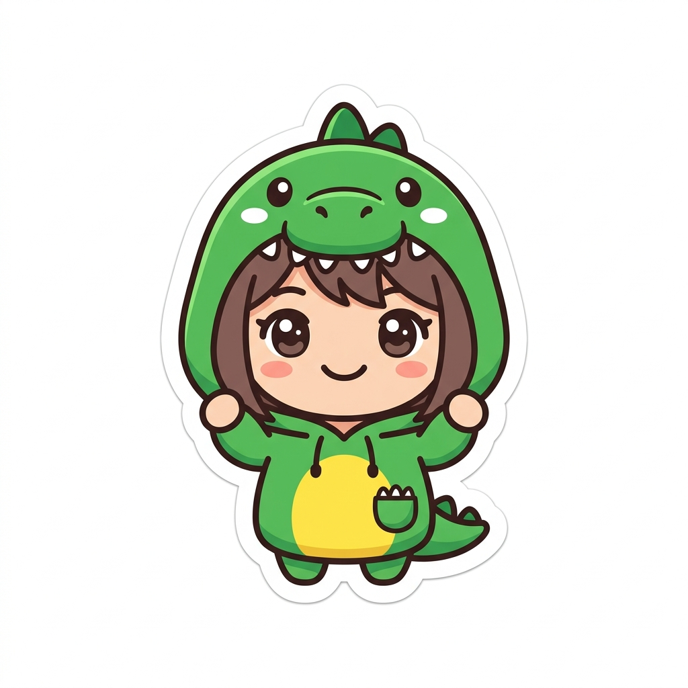
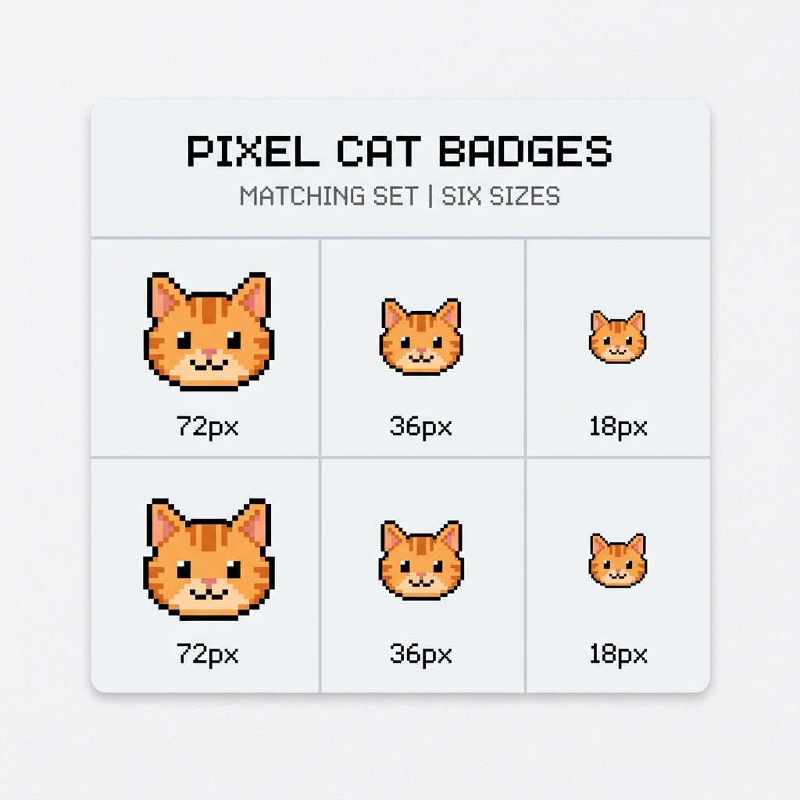

「そもそもバッジってなに？」という初めての方でも大丈夫！
バッジの魅力と、このサイトでの超かんたんな作り方を分かりやすくご紹介します。
サブスクバッジやビッツバッジは、配信者とリスナーの絆の証であり、
チャット欄で圧倒的な存在感を放つ特別な勲章です。
グレーから、パープル、レッド、そして最高峰のゴールドへ。
進化するごとにリスナーの熱量と配信の歴史が刻まれていくからこそ、デザインには絶対に妥協したくないもの。
当サイトは、あなたのコミュニティのためだけに最適化された、
最高にエモくて視認性の高いネオンバッジを一瞬で生成します。

最初はここから
応援すると
さらに応援で
あこがれの
Twitchにバッジを登録する際、避けて通れないのが「3種類のサイズ（大・中・小）」の同時用意。
スマホの極小画面からPCの大画面まで、あらゆる解像度で綺麗に表示させるための必須ルールです。
厄介なのは、普通のソフトで無理やり18pxに縮小すると、ドットのフチがにじんでしまい、
チャット欄で「何の絵か分からない潰れた塊」になってしまうこと。
当サイトの「等倍にじみ防止技術」なら、お気に入りのデザインをポンと置くだけ。
あらゆる解像度でクッキリ映える極上クオリティの3サイズを、たった1秒で一瞬で一括生成します。
WEBツールを普段あまり使わない人でも、パッと見で安心できるシンプルな手順です。



| 機能・特徴 | 他の一般的な画像アプリ | 当サイト (かんたんバッジメーカー) |
|---|---|---|
| 等倍にじみ防止 (クッキリ綺麗) | ❌ (ぼやけてにじんでしまう) | 🌟 〇 (一番小さいサイズでもクッキリ可愛い) |
| 自動でフチをネオン発光 | ❌ (手動で光らせるのは凄く大変) | 🌟 〇 (スライダーを動かすだけで綺麗に光る) |
| 公式Bits進化カラー一括生成 | ❌ (1枚ずつ色を変える不毛な作業) | 🌟 〇 (1クリックで全色まとめて一括保存) |
| チャット欄テストシミュレータ | ❌ (登録するまで見え方がわからない) | 🌟 〇 (黒・白のチャット画面で事前テスト可能) |
SNS（XやDiscordなど）の通知欄でも絶対に潰れない、18px規格で作る「超クッキリ可愛いアイコン」が作れます。アクリルキーホルダーなどのオリジナルグッズのフチを綺麗に光らせる原案用としても大活躍！

元画像 (にじみやすい)通常、外注すると数千円かかる「バッジ3サイズ」と「チャンネルポイント用3サイズ」の合計6枚のお揃いアイコンセットが、完全無料で同時に手に入ります！初期コストをゼロにして、すぐに配信をスタートできます！
